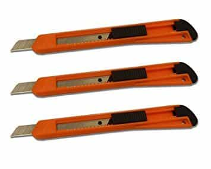

CR is an old version STEM guy (Chemistry, not Computers) and enjoys learning and teaching from the lone book that defines Western Civilization and any other civilization wise enough to choose to adopt it—the Bible.


Even though a permit is not required to have one, I admit to not carrying a pocket knife until 2015. I had realized that I became part of a generational sea change on this item, which I now view as being much more than just a male accessory choice.
It all started when I was at a Garden Center store looking for a trellis, but when I found one, it was bound to several others by nylon zip-ties. I knew I couldn’t saw it free with my keys, so I started to look for some help. I soon saw an old man walking down the aisle and instinctively thought he would have a knife on him, but he didn’t, nor did another man I asked. I then found a store worker who cut them free and off I went with my trellis, though not feeling good about myself or the state of male civilization.
As a kid in the 1970’s, almost every boy carried a pocket knife. It wasn’t a weapon or for showing off, unless it was new. Sometimes you had to actually cut something and scissors just wouldn’t do.
When you were bored, you’d whittle a stick or a piece of wood with it. I have a simple walking stick carved by my great grandfather, and I recall the mystique of watching and helping as he sharpened his knife. In my keepsake box, I have a pocket knife of my father and grandfather. Interestingly, along with a Confederate $5 bank note, Lincoln had one in his pocket the night he was shot.
But times have changed, and I stopped bearing the humble tool that naturally accompanied my forefathers. I am not alone here, and think this happened for various reasons and with certain outcomes.

My farmer and forester ancestors needed knives at any potential moment, but for my generation of desk jockeys and mind workers, scissors and box cutters do just fine. This is a banal, demographic reason, but the next ones cut to the core of a man’s soul.
Safety is a great thing for us all. Seat belts and even OSHA have had some benefit. In my job as a scientist, we take precautions scientists never gave thought to a few decades ago. People like me in occupations with built-in physical hazards are happy for that.
But when we live our everyday lives with a requirement of eliminating all hazards, we get ridiculous. This leads to safety Nazis who apply their same calculus to pocket knives as they do to guns: viewed solely as a dangerous object to be feared and avoided, and not as an everyday tool that has hazards to be respected.
There’s a reason the 2006 book The Dangerous Book For Boys included topics on uses of knives. The safety culture agitates against even reasonable male daring, much less carrying a tool that could be used as a weapon. This mindset turned rancid as it became codified absurdity through.

It sounds tough, but it’s a cop-out. Adults who abandoned the need of using discriminating wisdom and good judgment implemented “no sharp objects allowed on campus” rules, as opposed to something like “pocket knives may be three inches or shorter” with strict enforcement (liberty with reasonable limits that is age appropriate).
Intractable un-Solomon-like thinking leads to such silly results as boys being expelled for bringing a kitchen knife to school to cut an onion for a science project and for biting a pop tart into the shape of a gun.
You soon realize that when adults don’t use adult discretion, kids don’t learn the right lessons and are trained to have foolish fears. Humble pocket knives became an easy victim. The do-gooders imagined they were protecting kids from switchblade or machete melees, but they forgot that Grace Kelly used scissors to kill the intruder in Hitchcock’s Dial M for Murder.

The pocket knife culture was already feeble, but 9/11 gave it a grievous blow. Swiss Army Knife sales fell by 35% as a result of the attacks. The hijackers interestingly used not knives, but the culturally un-feared box cutter to do their evil deeds: they used our overblown fears against us. Since then, many a pocket knife has been melted into plowshares by the TSA, I assume, after confiscation at airports, including one of mine. All of these contributors have led to another sad consequence…
I believe the culmination of these factors have led men to be changed and lessened. The old man from whom I asked for a pocket knife at the garden store looked embarrassed to admit his knifelessness, as he knew from whence he had fallen. I felt no better as I had to get assistance from a female store employee, no less, who got some scissors (what else) to cut lose my quarry (what a daring name for a trellis). To complete my humiliation, she had to do the cutting… corporate safety rules, I guess.
As is human nature, some rebel against our anti-knife culture and dive headlong into getting more, bigger and longer blades, but most of us just rolled over, and we were figuratively castrated.
But I’ve decided to not roll over anymore. I didn’t need an impressive knife like my son’s, which doubles as a gun bayonet, but I did ask him to get me a traditional pocket knife for Christmas, and now I carry one with me always.
The two knives I have now are quite different and illustrate the types that are suitable for many guys. My small one is barely 2-1/2 inches long when closed and is a sleek 3/8 inches wide, with two thumbnail opening blades. It serves for minor and general use at work and doesn’t fill my pocket. It looks and works better than a stupid freebee keychain Victorinox-wannabe with bad scissors.
My other knife is almost four inches closed with a full-bellied blade and can be opened with one hand by a thumb stud. It is more useful for chores around the house or in the woods.
A thick, multi-tool Swiss Army knife is useful, but can be too bulky for a pocket, which is why if you have one, it’s likely in your dresser drawer. Just start with your needs and avoid the urge to go full-bore Crocodile Dundee. You may rarely need it, but when you do, you’ll feel better for having your own pocket knife.
Read More: How To Keep Your Knives Blazing Sharp